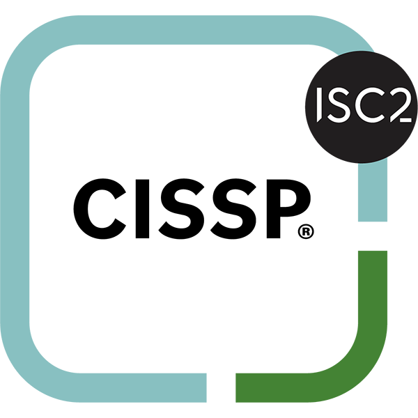
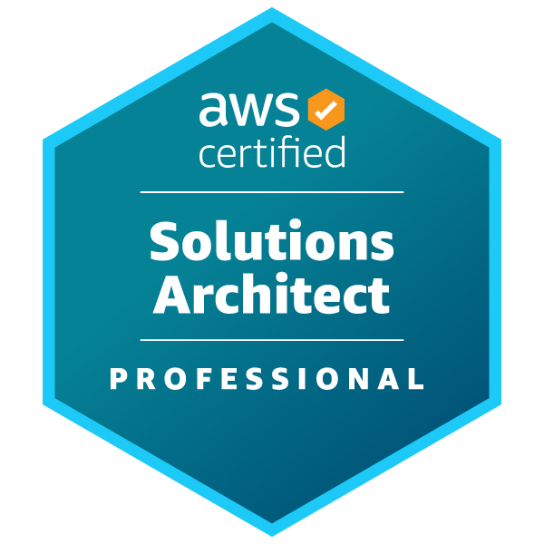
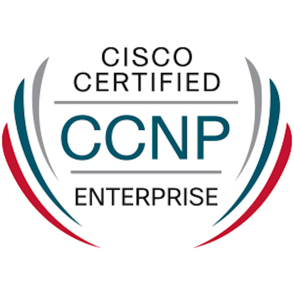

Christian Martin
Designing secure, automated infrastructure at scale — from enterprise cloud platforms to AI-ready environments.

Recent Writing & Activity
From the Blog
InfrastructureBuilding a Liquid-Cooled Hyperconverged Inference Platform
A deep dive into designing and assembling a custom liquid-cooled homelab optimized for running local LLMs at scale with Proxmox and vGPU passthrough.
AI / MLBenchmarking DeepSeek, Qwen & Gemma on Consumer Hardware
Performance comparisons of the latest open-weight models running locally via Ollama, including VRAM usage, tokens/sec, and quality assessments.
View all articles →Engineering Philosophy
Principal Solutions Architect with over a decade of experience designing and implementing enterprise-grade distributed systems and cloud-native architectures. My strategy is uniquely informed by a previous career in private equity, where I developed a rigorous analytical approach to complex risk and investment.
I specialize in building robust, scalable infrastructure solutions that bridge traditional data centers with modern cloud platforms — always with security as a first-class concern.
Current Focus
Enabling AI adoption in enterprise environments: integrating on-prem LLMs, building ML inference pipelines, and implementing Retrieval-Augmented Generation (RAG) architectures with enterprise-grade security controls.
Core Competencies
Cloud & Orchestration
Infrastructure Automation
Observability
Security
AI & ML Engineering
Languages & Frameworks
Professional Experience
Independent Consultant
Zurich, Switzerland
Architecting and automating secure, highly available infrastructure on AWS and Azure using Terraform and Ansible. Providing comprehensive cloud hosting, DNS solutions, and zero-trust security architecture for businesses of all sizes.
- Cloud hosting and DNS solutions (AWS Route53, Cloudflare) for small businesses
- Implemented zero-trust security architecture for cloud environments
- Reduced deployment time by 70% through IaC and CI/CD pipeline optimization
Senior Cloud Platform Architect
Riverside Church Organization & Legal · New York
Led cloud-native architecture design and implementation, specializing in Kubernetes orchestration, multi-cloud infrastructure, and DevSecOps practices.
- Migrated high-traffic WordPress site (1,500 weekly visitors) to AWS with Nginx reverse proxy, improving performance by 20%
- Successfully migrated 300+ desktop clients to AWS Workspace during peak pandemic as part of VDI initiative
- Automated AWS workflows using Python, Bash, CloudFormation, Ansible, and Terraform
VMware Infrastructure & Systems Security Engineer
Riverside Church Organization & Legal · New York
Architected and maintained high-availability infrastructure supporting mission-critical applications. Implemented monitoring, logging, and alerting solutions for optimal system performance.
- Optimized SharePoint 2016 deployment on vSphere with custom ESXi images using PowerCLI
- Automated provisioning and configuration management with Terraform, Ansible, Bash, and Python
- Implemented centralized logging and monitoring using the ELK stack and Prometheus/Grafana
Associate DevOps Engineer
Amazon Web Services (AWS) · New York
Conducted DevOps assessments and provided guidance on cloud adoption, implementing DevOps methodologies using AWS-native tooling for enterprise clients.
- Designed CI/CD architectures and pipeline strategies for multi-account cloud environments
- Led project planning and delivery for telecom clients using AWS Global services infrastructure
- Created security check processes through cfn-lint, cfn_nag, and Cloud Custodian
Participant: Data Engineering Research
Google Cloud Learning Workshop · New York
Selected as 1 of 87 participants for an intensive 24-week developmental program focused on cloud-native technologies and advanced programming.
- Deep focus on Terraform, Docker, Kubernetes, and GKE cluster architectures
- Deployed and evaluated multi-tier, cloud-native applications across single-zone, multi-zone, and regional clusters
Infrastructure Analyst (CND)
iDefense Inc. (Contractor) · Chantilly, VA
Led security operations and threat intelligence efforts to protect enterprise infrastructure. Conducted grey and black box penetration testing of cloud and hybrid environments.
- Comprehensive penetration testing of Azure cloud and hybrid environments
- Leveraged Splunk to create forensic analysis dashboards and adversarial activity detection
- Enforced regulatory compliance controls (PCI-DSS, SWIFT, NIST, ISO) and CIS benchmark hardening
Data Engineer
Gwynnie Bee · New York
Built data infrastructure and barcode scanning systems processing over 6 million garments, with data synchronization pipelines feeding into Hadoop for large-scale analytics.
- Implemented Honeywell Voyager barcode scanner system with Java serial port application module
- Deployed MySQL on RHEL with NetSuite-to-Hadoop data synchronization for analytics and reporting
Credit Risk Analyst (Contract)
Cerberus Capital Management LP · New York
Supported buy-side M&A transactions at a leading global private equity firm, preparing valuations, financial models, and due diligence across healthcare and retail sectors.
- Assisted three senior VPs on major acquisitions: Steward Health Care System, Supervalu, and TransCentra
- Prepared valuations using comparable companies, precedent transactions, and DCF analysis
- Led equity valuation team for TransCentra, building pro forma financial models for a $5B acquisition
Certifications & Professional Development

Certified Information Systems Security Professional (CISSP)
Issued July 2022
AWS Certified Solutions Architect — Professional
Issued April 2023Certified Kubernetes Administrator (CKA)
Issued January 2023Azure Solutions Architect Expert
Issued November 2022Terraform Associate
Issued September 2022Red Hat Certified Engineer (RHCE)
Issued August 2022Professional Cloud Architect
Issued May 2022
Certified Network Professional Enterprise (CCNP)
Issued March 2022Conferences & Training
Cyber Threat Intelligence Summit
Advanced threat intelligence gathering and analysis using Splunk and SolarWinds.
Jan — May 2023Cloud Security Exchange
Comprehensive cloud security strategies and best practices for enterprise environments.
Feb — Apr 2023Pen Test HackFest — NetWars Tournament
Advanced ethical hacking techniques in the NetWars Tournament of Champions.
November 2021Digital Forensics & Incident Response Summit
Network traffic analysis using tcpdump and Wireshark for forensics and data extraction.
2021SRE and DevOps Engineer with Google Cloud
5-course Professional Certificate covering CI/CD, monitoring, and SRE principles.
Oct 2020Data Engineering, Big Data & ML on GCP
5-course specialization in big data solutions design, architecture, and optimization.
Jul — Sep 2019Academic Background
Graduate-Level Computer Science
Grove School of Engineering, City College of New York (CUNY)
Focus on distributed systems, network architecture, and information security.
BSc Computer Engineering
University of Cape Town (UCT)
Get in Touch
Open to consulting opportunities, technical advisory roles, and infrastructure architecture projects.